原帖（英文原文 + 译文）
Most "one prompt" Opus 5.5 videos weren't one prompt
It writes code that draws every frame, then checks its own work
I broke down exactly how they're really made: [X Article]
大多数“一句提示词”做出的 Opus 5.5 视频，其实都不是一句提示词。
它写的是画出每一帧的代码，然后检查自己的作品。
我把它们到底是怎么做出来的完整拆解了一遍：[X 长文]
kerazcity（@0xkerazcity，简介 “AI engineer | Trends expert”），2026-10-16 21:00（UTC+8）。截至 2026-10-20 13:10（UTC+8）：33,404 次浏览、73 赞、190 收藏、11 转发、9 条回复、4 条引用。作者在该帖下没有自我回复；引用帖多为其另一条作品帖的转推，另有 @0xnoonez 的“10 个 GitHub 仓库组成动效工作室”帖引用了它。长文正文约 2.4 万字符、48 个代码块/表格、8 条嵌入帖、5 张配图（其中一张重复使用）。
导读
这不是介绍某个 GitHub 项目的帖子，而是一篇方法论长文，所以本页以全文翻译为主体。它回答的问题很具体：为什么同样号称“一句提示词”，有人做出爆款、有人做出“一般般”？作者的答案是两件事——你交给模型多少决定，以及你是否让模型渲染并查看自己的帧。
它怎么工作（全文骨架）：
- 代码而非像素。页面暴露
window.seek(t)，每一帧是时间的纯函数；无头 Chrome 逐帧调用并截图，ffmpeg 合成 MP4。由此得到可复现、可局部修改、可自检的视频。四条路线：A 单 HTML 代码绘制（默认）、B Remotion/HyperFrames 框架、C 图像/视频模型 + 代码重绘、D 素材剪辑。 - 提示词阶梯。L1 一句话（约 150 字符，只适合测环境）→ L2 品牌短片（加网址、真实截图、音乐）→ L3 状态规格（逐小节列状态，消除解读）→ L4 导演简报（9.5k–19k 字符，带流程关卡与评审，6–12 小时自主运行）。
- 每一行提示词都拿走模型一个决定。缺失的行由默认值填补——渐变居中标题、全部淡入、紫蓝渐变、发光粒子、转台旋转、线性运动——于是要“点名禁止”，并把形容词翻译成数字。
- 渲染契约 + 渲染器。纯函数、无时钟、带种子随机、锁版本、先等字体、循环只渲染 0..N-1；附 6 秒示例页、Playwright 渲染脚本 render.mjs 和 ffmpeg 命令（含子帧运动模糊）。
- 数字速查。缓动 cubic-bezier、四种弹簧预设与阻尼比换算、以帧计的时长与错开、节拍网格（120 BPM 最友好）、迪士尼动画原则的帧数写法。
- 评审循环。模型看不了视频但能读图：联系表、条带、手机测试、运动轨迹、速度曲线；用“严厉动效导演”的评分提示词迭代 2–4 轮到每项 8 分。
- 声音、循环、导出、引擎、故障表、导演简报。用 librosa 测节拍、用 numpy 合成音效、-14 LUFS 混音；无缝循环五规则；X 的 MP4/GIF 导出；引擎选型；17 条“症状→原因→修法”；L4 导演简报完整模板。
与本站已有页面的关系：它和 Florence 的《Opus 5.5 动效实验室》在结构上高度重合（形容词→数字、渲染契约、缓动/弹簧/节拍速查、引擎选型、X 导出），文中也嵌入了 Florence 的一条帖子；本文更系统，多了提示词阶梯、默认值对照表、声音与故障对照表。想看具体作品可以配合 Opus 5.5 视频大赏（418 支）和 Prompt Motion 画廊；想要现成工具链可以看 huashu-motion、Motion Prompt 动效名词库、音乐视频 Skill；音效部分可对照 Openverse 免费音效检索；“代码即影片”的另一个例子是 ascii-sharks，风格化合集见 Lemo-Opuscar。
要点
“一句提示词”多半是营销说法
爆款大多是 L3/L4 规格或简报，或者有 2–4 轮追加修改。Donald 的“一句话”约 9,500 字符；Thariq 的总结是“一万字符，加上 skills、示例和 API key”。
视频 = seek(t) 的纯函数
不依赖时钟和未设种子的随机数，第 84 帧每次都一样，才能“只修第 84 帧”。这是一切自检和迭代的前提。
点名默认值，再用数字替代形容词
“避免 AI 感”无效；要写“禁止渐变居中标题、全部淡入……”，把“高级感”写成 ease-out-quint 600–800 ms、阻尼比 0.8、边距 ≥ 8%。
让模型看自己的帧
联系表、条带、360 px 手机图都是图片，模型能读；评分提示词要求附帧号列出 3 个最大问题，修完重渲，直到每项 8 分。
声音靠测量
画面要能静音成立；声音只能准时或晚 1 帧；用 librosa 取拍点/起音，用代码合成音效，混到 -14 LUFS，并检查 150 Hz–6 kHz 手机频段。
循环与导出的细节
只渲染 0..N-1 帧、整数周期、圆周采样噪声；GIF 用 25/50 fps 避免延迟取整漂移；先定画布再写镜头。
核实
核实时间 2026-10-20 13:10–13:40（UTC+8）。“本站实跑”指在本站构建机上用无头 Chrome 原样运行文中代码。
| 说法 | 结论 | 依据 |
|---|---|---|
| Opus 5.5 于 9 月 22 日发布 | 属实 | @claudeai 发布帖 2026-09-22 16:31 UTC（UTC+8 为 9 月 23 日 00:31）。 |
| 文中 6 秒示例页 index.html 可直接运行、确定性渲染、首尾无缝 | 属实（本站实跑） | 把代码原样存为 HTML，用无头 Chrome 调 seek(0)…seek(5.5) 截图两轮，12 帧哈希完全一致；第 359 帧（t=5.983 s）与第 0 帧逐像素相同。联系表见第 5 部分。render.mjs 未运行（需要 npm 安装 Playwright，本次受磁盘约束未装）。 |
| 四种弹簧预设的阻尼比、过冲、2% 落定时间 | 属实 | 用文中 spring() 公式数值计算：Snappy 0.839 / 0.79% / 0.229 s；Default 0.997 / 0 / 0.445 s；Heavy 1.054 / 0 / 0.678 s；Playful 0.472 / 18.6% / 0.557 s，与表格一致。 |
| Remotion 默认弹簧阻尼比 0.5；react-spring 默认约 1.0 | 属实 | Remotion 源码 spring-utils.ts 默认 damping 10、mass 1、stiffness 100 → 10/(2√100)=0.5；react-spring 默认 tension 170、friction 26 → 0.997。 |
| 128 BPM、30 fps 每拍累加 14 帧，第 32 拍落在 448 而非 450 | 属实 | 每拍 14.0625 帧；32×14=448，round(32×14.0625)=450。BPM 表各值复算一致（28.125 四舍五入为 28.13）。 |
| GIF 只有 25/50 fps 帧延迟整除 | 属实 | GIF 延迟单位为 1/100 秒：25 fps=4、50 fps=2；24/30/60 fps 分别为 4.17、3.33、1.67，需取整。 |
| 一行提示词原文、Max effort | 属实 | Stephan Livera 原帖文字与文中代码块逐字一致，原帖写明 “on Max effort”。 |
| “发布周被收藏最多的提示词是一份规格” | 基本可信 | @twoclipping 的状态规格帖约 2.1 万收藏，是文中嵌入帖里最高的；未与全网同期帖子比较。 |
| Donald 口述 5 分钟、Claude 跑 12 小时；提示词约 9,500 字符 | 前半属实；字符数未核 | 原帖原话如此（约 402 万次浏览）；完整提示词在其外链中，本次未打开计数。 |
| HyperFrames 是 HeyGen 的开源项目 | 属实 | GitHub heygen-com/hyperframes，Apache-2.0，约 6.8 万星（2026-10-20）。“需要 Node 22+”未核。 |
| X 媒体限制（视频 140 秒、GIF 15 MB、GIF ≤ 1280×1080） | 部分一致 | X 开发者文档的 GIF 限制（15 MB、1280×1080、≤350 帧）一致；视频时长上限各版文档说法不一（旧版 API 文档 140 秒，较新的镜像写 20 分钟），以 X 当前官方说明为准。 |
| Tony Dinh 花 1000+ 美元 / 不到 30 分钟；Vox 5 h 28 min 约 90 美元；@mablesjoseph 163 次调用；Shikhar “medium 第三次迭代” | 未核实 | 文中未附这些帖子，本次未逐一检索。 |
| “文中每个脚本都真的跑过” | 部分验证 | 本站只实跑了示例页和数值公式；beats.py、sfx.py、render.mjs、ffmpeg 命令未运行（避免安装依赖与写入大文件）。 |
对我们的启发
- 把“确定性”当成第一需求。任何要让 agent 迭代的产物（视频、图表、页面截图），先保证同输入同输出，否则“修第 84 帧”无法验证。本站的页面截图核验也可以借鉴：固定视口、等待字体、比较哈希。
- 给 agent 一个能“看”的中间表示。模型看不了视频就给联系表、条带、曲线图；同理，看不了长日志就给摘要表。评审提示词要求“附帧号/行号的 3 个最大问题”，比“再好一点”有效得多。
- 用禁止清单 + 数字对抗默认值。写给模型的设计需求（包括本站文章页样式）都可以照此写：列出不许出现的默认模式，把“克制”“高级”换成具体字号、间距、时长。
- 提示词阶梯也是成本阶梯。L1 用来测环境，真正要发布的东西至少写到 L3；长任务按 L4 加流程关卡和评审日志，并允许“10 分钟无回复就继续”。
- 警惕“一句提示词”叙事。转述别人作品时，应同时记录真实的提示词长度、轮次、时长和花费（文中的“账单”表就是好范例）。
全文翻译
以下为长文全文中文翻译。X 长文接口返回的正文不含代码块和嵌入的位置信息，本页按上下文把 48 个代码块/表格、8 条嵌入帖和配图放回原位；表格已译为中文，提示词与代码保留英文原文以便复制，主要提示词模板附“中文对照”折叠块。嵌入帖只给摘要和链接，视频未转载（只用封面帧）。
正文标题：Opus 5.5 Motion Design: The Complete Playbook
自从 Claude Opus 5.5 在 9 月 22 日发布，我的时间线上全是动效设计：作品集混剪（showreel）、发布短片、音乐 MV、3D 循环动画。全部由代码渲染。几乎每一条都配着“一句提示词”的文案。
其中有些确实只用了一句提示词。大多数不是。这两者之间的差距，就是本文要讲的东西。
很多人没注意到这一点：Opus 5.5 并不“做视频”。它没法输出 MP4。它写的是一个能画出每一帧的程序，由浏览器逐帧播放这个程序，再由 ffmpeg 把这些帧拼成文件。
所以你的视频质量取决于两件事：
- 你交给它的决定。你漏掉的每一行，Opus 都会用默认值补上。这些默认值，就是你早已学会划走的那种“AI 味”。
- 你让它跑的循环。当 Opus 能渲染并查看自己的帧时，它会修正问题。不能时，你拿到的就是它的初稿。
Claude Code 团队的 Thariq 用一条帖子概括了这个差距：
我把定义了这股潮流的那些帖子过了一遍，把所有东西整理成一本手册，你不必再从五十条推文里逆向工程。提示词的每一行让 Opus 决定什么、你说得含糊时它会退回到什么、如何让它检查自己的作品，以及你需要的每一条提示词、每一个数字和每一个脚本。全部可以直接复制粘贴，文中每个脚本都真的跑过。
本文内容
- TL;DR：一张表看完 12 条规则
- 工作原理：是代码而不是像素，以及从需求到 MP4 的 4 条路线
- 提示词阶梯：从 L1 一句话到 L4 导演简报，每一级附模板
- 走进 Opus 的脑子：每一行提示词改变了什么，缺了这一行它默认做什么
- 环境搭建：聊天应用 vs Claude Code、推理强度（effort）档位、项目规则
- 引擎：渲染契约，以及一个可以直接复制的渲染器
- 数字：缓动、弹簧、时长、节拍网格、动画原则
- 评审循环：如何让 Opus 看自己的帧
- 声音：它听不见，所以它去测量
- 循环与导出到 X
- 选择引擎：纯 HTML、Three.js、Remotion、HyperFrames、GSAP
- 修复：每一种常见故障，以及修复它的提示词
- 导演简报：12 小时长跑背后的完整模板
- FAQ 与术语表
不需要 After Effects。一个浏览器、一个终端和 Opus 5.5 就够了。
TL;DR：12 条规则
如果别的都不看，就看这张表。下文每一部分都是在解释其中的一行。
| # | 规则 | 为什么重要 |
|---|---|---|
| 1 | 要一个“画帧的程序”，而不是“一个视频” | Opus 无法输出视频。代码让每一帧都可复现、可编辑 |
| 2 | 每一帧都必须是时间的纯函数：seek(t) | 每次渲染同一帧都一样，所以你能只修第 84 帧而不动其他部分 |
| 3 | 用数字替代形容词 | “高级感”是一张空白支票。Opus 会用它的默认值填满空白支票 |
| 4 | 点名禁止默认值 | “避免通用 AI 感”只会把一个默认值换成另一个 |
| 5 | 给它参考：一帧画面、一段视频或你自己的图库 | 它会学语法（节奏、字体、转场），而不是内容 |
| 6 | 在第一行写明引擎和画布 | 不说的话 Opus 会做成一个 HTML 文件。后面再换引擎就得重做 |
| 7 | 以帧计数，踩着节拍剪 | 120 BPM、30 fps 恰好每拍 15 帧。干净的数学，干净的同步 |
| 8 | 用弹簧，不用线性运动 | 阻尼比 0.7–0.85 显得高级。线性运动一看就是“渲染出来的” |
| 9 | 每个镜头只有一个主动作 | 其他一切都等待、变暗或保持静止 |
| 10 | 让它在完整渲染前先渲染静帧并查看 | 一张联系表（contact sheet）能把初稿变成第三稿 |
| 11 | 用帧来写追加指令，而不是感觉 | “第 84 帧峰值晚了 2 帧”可以修。“让它更炸”只能靠猜 |
| 12 | 做循环时渲染第 0 到 N-1 帧，绝不渲染第 N 帧 | 第 N 帧就是第 0 帧。播两次就是接缝处的卡顿 |
截个图吧。然后继续往下读，看“为什么”和“怎么做”。
第 1 部分：你让 Opus 做视频时，到底发生了什么
Opus 5.5 接收文字和图像，输出文字。这就是全部接口。所以这股潮流里的每一段视频，都是 Opus 写的一个程序，加上某个把程序变成帧的东西。
流水线一步步是这样的：
- 你写一份需求（brief）：文字，有参考的话加上参考。
- Opus 写代码。通常是一个 HTML 文件，里面有一个函数
seek(t)，负责精确画出时间 t 的那一帧。 - 一个无头浏览器打开这个文件，依次调用
seek(0)、seek(1/60)、seek(2/60)……每帧调用一次。 - 它把每一帧截图存成 PNG。
- ffmpeg 把这些 PNG 拼成 MP4 并加上音频。
在 60 fps 下，一段 15 秒的作品就是 900 次 seek(t) 调用。没有任何东西依赖时钟，所以第 512 帧每次运行都一模一样。
从你的需求到那个 MP4，有四条路线：
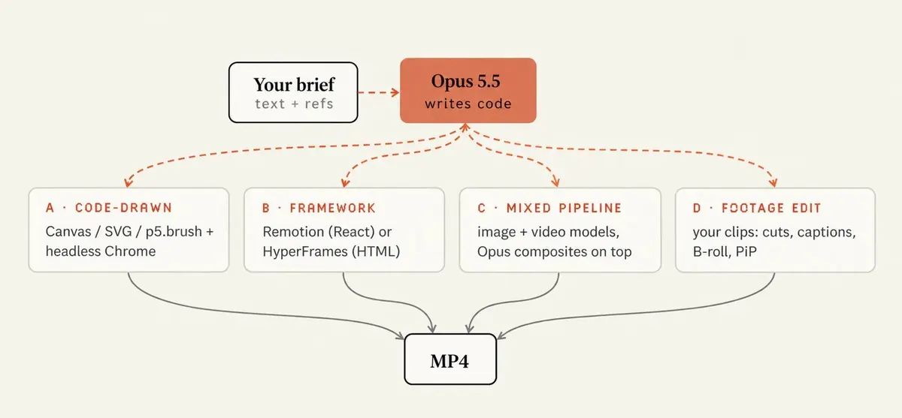
| 路线 | Opus 写什么 | 最适合 | 注意 |
|---|---|---|---|
| A · 代码绘制 | 一个 HTML 文件里的 Canvas 2D、SVG、WebGL 或 p5，由无头 Chrome 渲染 | 15 秒以内的循环、动态文字、抽象动效、Three.js 3D | 超过约 1 分钟，单文件会变乱。渲染脚本归你维护 |
| B · 框架 | Remotion（React 组件）或 HyperFrames（HTML + GSAP），用它们的 CLI 渲染 | 系列、模板、数据驱动视频、30 秒以上的任何东西 | 需要安装。要明确点名，否则 Opus 会选路线 A |
| C · 混合流水线 | 通过 API 调用图像或视频模型，再用代码合成、在上面重绘 | 角色、物理、难以手写代码的写实运动 | 需要 API key 和预算。一致性靠代码层保证 |
| D · 素材剪辑 | 在你自己的素材上做剪切、字幕、B-roll 和画中画 | 口播、带真实录屏的产品演示 | Opus 能看帧但听不到语音。给它带时间戳的逐字稿 |
放任不管时，Opus 通常选路线 A：一个文件，零依赖。想要路线 B，就在第一行说明，比如“a Remotion composition, 1080x1920, 30 fps, 600 frames”。
写代码而不是生成像素，听起来像是限制。其实恰恰相反：
- 每一帧都可复现。把第 84 帧渲染两次，得到两张一样的图。
- 修改很便宜。改一个数字，重渲一秒钟。不用重新抽卡视频模型、祈祷好运。
- Opus 能检查自己的作品。它很会读图，而动画的联系表就是一张图。正是这个循环把爆款和“一般般”的作品区分开（第 7 部分）。
- 源码归你。同一个项目里的第二个视频总是更快，因为渲染器、音效合成器和导出流水线都已经在了。
第 2 部分：提示词阶梯——从一句话到导演简报
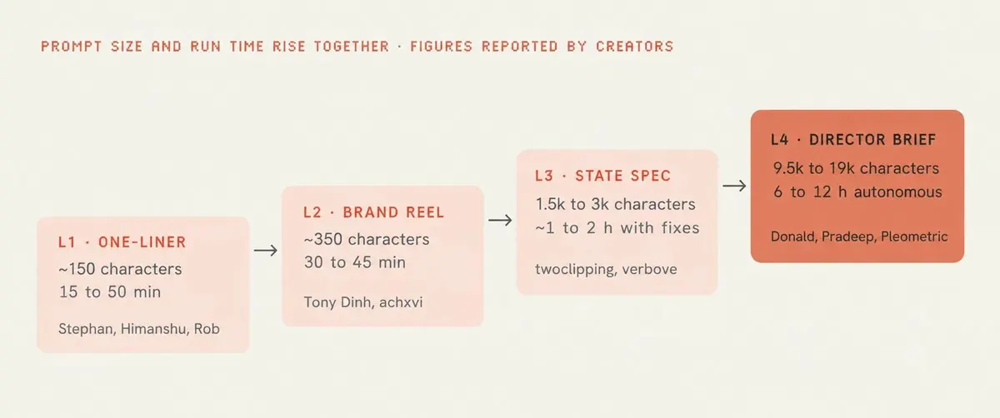
| 级别 | 提示词长度 | 运行时间 | 你来决定 | Opus 决定 | 适用 |
|---|---|---|---|---|---|
| L1 · 一句话 | 约 150 字符 | 15–50 分钟 | 类型和时长 | 其余一切 | 测试环境、发条好玩的帖子 |
| L2 · 品牌短片 | 约 350 字符 | 30–45 分钟 | 产品、真实素材、音乐 | 视觉、故事节拍、动效 | 快速做一条发布视频 |
| L3 · 状态规格 | 1.5k–3k 字符 | 含修改约 1–2 小时 | 每个状态、节拍网格、构建规则、禁用项 | 每个状态如何执行 | 产品片、UI 循环 |
| L4 · 导演简报 | 9.5k–19k 字符 | 6–12 小时自主运行 | 故事、角色、工具、流程关卡、评审 | 每个镜头内部的手艺 | 音乐 MV、短片 |
阶梯背后的规则：提示词越短，视频里属于 Opus 品味而不是你品味的部分就越多。
L1 · 一句话
这是发布那一周被复制最多的提示词：
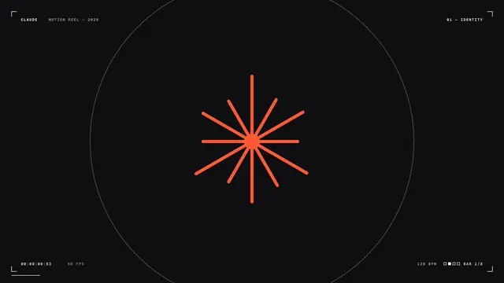
make a dynamic 15-second motion graphics video that shows what an incredible motion designer you are, like it's your showreel for a résumé. go all out.中文对照（译文，仅供理解；复制使用请用上面的英文原文）
做一个有活力的 15 秒动态图形视频，展示你是一个多么不可思议的动效设计师，就像你简历上的作品集混剪。全力以赴。它为什么这么好用：
- “简历上的作品集混剪”设定了一个 Opus 早已熟悉其规则的类型：快切、每个镜头一种新技法、最好的作品放最前。
- “你是一个多么不可思议的动效设计师”让模型本身成为主题。没有可以弄错的产品，没有需要核对的事实。没有任何东西会偏离需求，因为根本没有需求。
- “15 秒”意味着 6 到 8 个镜头，小到一轮就能完成并打磨。
- “全力以赴”告诉它要花力气：更多技法、更多打磨轮次。它和高 effort 设置很搭。
一旦你把它对准自己的品牌，它为什么就崩了：一句话测试的是引擎，从来不是创意。成千上万的人跑了同一句话，于是这些混剪开始彼此押韵：同样的花招，同样的顺序。而当你把产品换进去，唯一重要的东西，恰恰是提示词从未描述的东西。
Rexan Wong 正好撞上了这堵墙。他的一句话视频看起来很一般，于是他拆解了那些好作品到底是怎么做出来的：
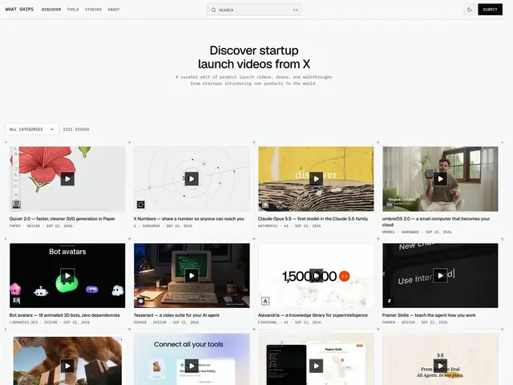
如果你还是想用一句话，给它一根脊梁。同样的体量，少得多的默认值：
Make a 15-second motion graphics showreel, 1080x1080, 60 fps, one HTML file.
Warm off-white #F4F1EA, near-black #141413, one accent #D97757.
A new technique every 2 seconds, cuts on a 120 BPM grid.
Banned: gradients, glow, particles, text in the corners, everything fading in.
Show me one still per shot before the full render. Go all out.中文对照（译文，仅供理解；复制使用请用上面的英文原文）
做一个 15 秒的动态图形作品集混剪，1080x1080，60 fps，单个 HTML 文件。
暖米白 #F4F1EA，近黑 #141413，一个强调色 #D97757。
每 2 秒一种新技法，剪辑点落在 120 BPM 的网格上。
禁止：渐变、发光、粒子、角落里的文字、所有东西一起淡入。
完整渲染前，每个镜头先给我看一张静帧。全力以赴。L2 · 品牌短片
多加三行，作品集混剪就变成了你的发布视频：你的网址、你的真实素材、音乐。Tony Dinh 说，一年前他为一条类似的发布视频付了 1000 多美元，而这次用 Opus 5.5 不到 30 分钟就做出了 TypingMind 的短片。
最重要的是关于素材的那一行。如果你不给 Opus 截图，它会编造一个看起来合理的 UI。看起来合理不等于是你的。
GOAL: a 20-second launch film for [PRODUCT] ([URL]) that makes [AUDIENCE] want to try it.
ASSETS: open the site with Playwright, screenshot the real UI, grab the real logo,
colors and fonts. Save everything to ./assets and list it before you animate.
Never redraw the product UI from memory. Crop and animate the real screenshots.
STORY (one beat each, 2-4 s):
1. Hook: the problem in 5 words or fewer, huge kinetic type.
2. The product appears and assembles itself piece by piece.
3. Three features, each one a real cursor action in the UI.
4. One number that proves it works: [METRIC].
5. Logo lockup + [CTA].
LOOK: brand colors only, one accent, [FONT]. Banned: gradients, glow, particles,
everything fading in, text in the corners.
SOUND: original 120 BPM track synthesized in code. Clicks and whooshes on the beats.
FORMAT: 1080x1920 first, then 1080x1080 and 1920x1080 from the same timeline.
QA: show me a contact sheet (one frame per beat) before the full render.中文对照（译文，仅供理解；复制使用请用上面的英文原文）
目标：为 [产品]（[网址]）做一条 20 秒的发布短片，让 [受众] 想去试用。
素材：用 Playwright 打开网站，截取真实 UI，拿到真实的 logo、颜色和字体。全部存到 ./assets，动画前先列出来。
绝不凭记忆重画产品 UI。裁切并动画化真实截图。
故事（每段一个节拍，2–4 秒）：
1. 钩子：用 5 个词以内说出问题，超大动态文字。
2. 产品出现，并一块块自己组装起来。
3. 三个功能，每个都是 UI 里一次真实的光标操作。
4. 一个证明它有效的数字：[指标]。
5. Logo 定版 + [行动号召]。
视觉：只用品牌色，一个强调色，[字体]。禁止：渐变、发光、粒子、所有东西一起淡入、角落里的文字。
声音：用代码合成的原创 120 BPM 音轨。点击声和呼啸声落在节拍上。
格式：先做 1080x1920，再从同一条时间线出 1080x1080 和 1920x1080。
质检：完整渲染前先给我看联系表（每拍一帧）。L3 · 状态规格
那一周被收藏最多的提示词不是一句话，而是一份规格。这个 UI 形变是一个从不切镜的形状：它变成按钮、加载器、播放器、图表，每一次变化都由光标驱动。
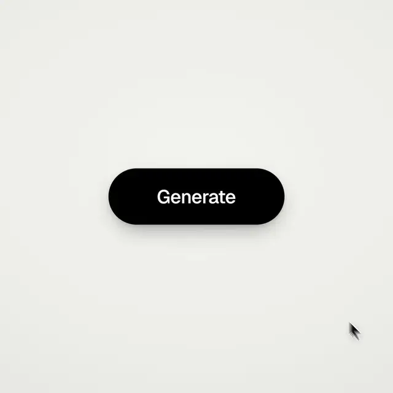
规格为什么这么有效：状态列表消除了解读空间。每个节拍都有已知的起始状态、已知的结束状态和已知的时长。Opus 是在执行你的片子，而不是在猜。
这是我版本的结构。把方括号填上：
<goal>
A 16-second product loop for [PRODUCT] that makes [AUDIENCE] understand [ONE IDEA].
</goal>
<inputs>
Before writing code, ask me for: the 8-12 UI states that tell the story, the real data
shown in each one, brand colors (hex) and fonts, one accent, and a track near 120 BPM if I have one.
</inputs>
<direction>
One container that never cuts. Each state is the same element changing size, radius and fill
while its content swaps behind a 4-frame blur. A cursor causes every change with a real click,
drag or keystroke. Warm neutral canvas. Springs at damping ratio 0.8 for UI, 1.0 for text.
</direction>
<states>
120 BPM at 30 fps = 15 frames per beat. 8 bars = 32 beats = 480 frames.
Bar 1: logo -> pill button Bar 2: button -> email field (typed)
Bar 3: field -> loader Bar 4: loader -> success check
Bar 5: check -> dashboard card Bar 6: card -> chart draws itself
Bar 7: chart -> command palette Bar 8: palette -> toast -> logo (frame 479 flows into frame 0)
</states>
<build>
1. One HTML file, one <canvas>, window.seek(t). No CSS transitions, no timers,
no state carried between frames.
2. Closed-form springs only. A value with several targets = the sum of one spring per change.
3. Text inside a morphing container enters 4 frames after the morph starts
and leaves 4 frames before the next one.
4. State changes land on beats. Bigger changes land on downbeats (every 4th beat).
</build>
<bans>
Gradients on UI, glow, particles, bouncy easing on text, anything static for more than one beat.
</bans>
<qa>
Show me the state list on the beat grid before any code. Then render one still per bar
as a contact sheet, score it, fix the 3 worst problems, and only then do the full render.
</qa>中文对照（译文，仅供理解；复制使用请用上面的英文原文）
<目标>
为 [产品] 做一条 16 秒的产品循环，让 [受众] 理解 [一个想法]。
</目标>
<输入>
写代码前，先问我要：讲清故事的 8–12 个 UI 状态、每个状态里展示的真实数据、品牌色（hex）和字体、一个强调色，以及如果我有的话，一首接近 120 BPM 的曲子。
</输入>
<方向>
一个从不切镜的容器。每个状态都是同一个元素在改变尺寸、圆角和填充，内容在 4 帧模糊后面切换。每一次变化都由光标的真实点击、拖拽或按键引起。暖中性色画布。UI 弹簧阻尼比 0.8，文字 1.0。
</方向>
<状态>
120 BPM、30 fps = 每拍 15 帧。8 小节 = 32 拍 = 480 帧。
第 1 小节：logo -> 胶囊按钮 第 2 小节：按钮 -> 邮箱输入框（打字）
第 3 小节：输入框 -> 加载器 第 4 小节：加载器 -> 成功对勾
第 5 小节：对勾 -> 仪表盘卡片 第 6 小节：卡片 -> 图表自己画出来
第 7 小节：图表 -> 命令面板 第 8 小节：命令面板 -> toast 提示 -> logo（第 479 帧接回第 0 帧）
</状态>
<构建>
1. 一个 HTML 文件，一个 <canvas>，window.seek(t)。不用 CSS 过渡、不用定时器、帧与帧之间不携带状态。
2. 只用闭式解弹簧。一个值有多个目标 = 每次变化一个弹簧，叠加求和。
3. 形变容器里的文字在形变开始 4 帧后进入，在下一次形变前 4 帧离开。
4. 状态变化落在拍点上。更大的变化落在强拍上（每第 4 拍）。
</构建>
<禁止>
UI 上的渐变、发光、粒子、文字上的弹跳缓动、任何静止超过一拍的东西。
</禁止>
<质检>
写代码前先给我看排在节拍网格上的状态列表。然后每小节渲染一张静帧做成联系表，打分，修掉最糟的 3 个问题，然后才做完整渲染。
</质检>L4 · 导演简报
浏览量最高的 Opus 5.5 音乐 MV 来自 Donald。他对着电脑说了五分钟，然后 Claude 工作了 12 个小时。
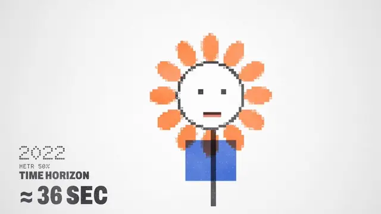
“一句提示词”在技术上没错。但那句提示词大约是 9,500 个字符的导演指示：一段参考视频、一首歌、工具和 API key、一个带关卡的流程，以及一个评审循环。那不是提示词，那是在雇一个剧组。完整模板在第 12 部分。
如何爬这个阶梯：
- 用 L1 测试你的环境，仅此而已。
- 你的产品一出现在视频里，就升到 L2。
- 以品牌身份发布的任何东西都用 L3。
- 作品超过一分钟、或有故事和角色时用 L4。
第 3 部分：走进 Opus 的脑子——你的每一行提示词改变了什么
这是整篇文章最重要的观点。你写下的每一行，都从模型手里拿走一个决定。你跳过的每一行，Opus 都自己做决定，而它的决定会滑向同样的几个默认值。
| 提示词行 | Opus 据此决定什么 | 漏掉时它默认 |
|---|---|---|
| GOAL 目标 | 观众应该感受到什么或做什么，以及该删掉什么 | “令人印象深刻”，于是它加更多特效，而不是讲清故事 |
| OUTPUT 输出（引擎 + 画布） | 代码架构、文件结构、分辨率 | 一个 HTML 文件，尺寸看它第一个想法是什么。后改画布就得重新调度每个镜头 |
| TIME 时长（秒 × fps） | 镜头数量、节奏、帧计算 | 松散的节奏，以及落不到整帧上的毫秒时长 |
| BEAT GRID 节拍网格（BPM） | 剪辑点和打点放在哪里 | 哪个镜头“感觉”结束了就在哪剪。没有节奏 |
| PALETTE 配色（hex） | 每一处填充、描边和灯光 | 深色背景、紫到蓝的渐变和一个亮色强调 |
| TYPE 字体 | 层级，以及文字如何进出 | 一个居中的大号粗体无衬线字 |
| MOTION 运动（缓动、弹簧） | 一切如何加速和落定 | 全部 ease-in-out，更糟的是线性 |
| SHOTS 镜头 | 每个镜头一个主角，以及镜头之间如何交接 | 每个镜头之间都是淡入淡出或滑动 |
| CAMERA 镜头机位（3D） | 焦段、高度、运动 | 一个缓慢的转台旋转 |
| SOUND 声音 | 配乐、音效、同步 | 一段通用合成器铺底，或者干脆没有声音 |
| BANNED 禁止 | 它不准去够的东西 | 下面默认清单里的一切 |
| QA 质检 | 渲染前它看不看帧 | 渲染一次，然后报告成功 |
自己试试。给 Opus 一个含糊的产品提示词，比如“给我的耳机做一个酷炫高级的 3D 动画”，你几乎总会得到：深海军蓝的太空、一个发光的环、泛光（bloom）、粒子，和一个旋转的产品。几乎一项不差，这就是默认外观。
默认外观，点名以便禁止
- 渐变背景上的居中标题
- 所有东西一起淡入，或每个元素都淡入加上滑
- 紫蓝渐变、发光、泛光、镜头光晕
- 作为装饰漂浮的粒子
- 角落里的标签和画框边线
- 任何 3D 产品都用转台旋转
- 线性运动
- 结尾一个带白闪的 logo 砸屏
把这段贴在任何动效提示词下面：
BANNED: centered title on a gradient; purple or blue gradients; glow, bloom, lens flares;
decorative particles; everything fading in at once; fade-and-slide-up on every element;
text or frame borders in the corners; turntable spins; linear moves; white flash transitions.中文对照（译文，仅供理解；复制使用请用上面的英文原文）
禁止：渐变背景上的居中标题；紫色或蓝色渐变；发光、泛光、镜头光晕；装饰性粒子；所有东西一起淡入；每个元素都淡入加上滑；角落里的文字或画框边线；转台旋转；线性运动；白闪转场。为什么“避免通用 AI 感”不管用：它告诉模型不要成为什么，却没点出任何东西，所以模型只是把一个默认值换成它最近的邻居。改为点名具体的模式。每次首轮渲染后，看看它仍然用了什么，把它加进清单。清单越来越长，默认值越来越少。
形容词翻译器
默认值就藏在形容词里。下面是该改写成什么：
| 不要写…… | 改写成 |
|---|---|
| “高级感” | 入场用 ease-out-quint，600–800 ms。弹簧阻尼比 0.8，文字不过冲。一个强调色。边距至少为画面的 8% |
| “利落” | UI 移动 150–250 ms。弹簧刚度 320、阻尼 30。条目之间错开 30 ms |
| “俏皮” | 仅对位置和缩放使用阻尼比 0.45–0.55 的弹簧（15–20% 过冲）。挤压拉伸 1.15 × 0.87 |
| “电影感” | 24 fps，30–35° 视角的镜头，镜头从不停住（停留时缓慢推进 2%），4 个子帧合成的运动模糊 |
| “干净” | 两种颜色加一个强调色。一次只动一个。12 栏网格。除了接触阴影不要任何阴影 |
| “有能量” | 128 BPM，每拍一剪，缩放打点 1.0 → 1.08 → 1.0 历时 6 帧，每小节换一次版式 |
| “平静” | 90 BPM，停留至少 1.5 秒，ease-in-out-sine，不过冲，视差 1.0 / 0.5 / 0.2 |
| “让它炸一点” | 缩放 1.0 → 1.08 → 1.0 历时 6 帧，峰值落在拍点上，阴影同时抬起 |
| “看着像 AI 做的” | 让它按名称列出用过的默认值，逐个禁止，再渲染一次 |
每个形容词都是一张空白支票。一个数字才是签了名的支票。
第 4 部分：环境搭建——两扇门
你可以 30 秒内在聊天应用里开始，也可以花大约 10 分钟搭一个真正的工作室。区别在于 Opus 能不能看自己的帧。
第 1 扇门 · Claude 应用，无需安装
- 在模型菜单里选 Opus 5.5。
- 粘贴本文里的一段提示词。
- Opus 写出 HTML，你在预览里看它播放。
- 用帧号提修改：“标题晚到了 3 帧，挪到第 42 帧”。
- 下载文件，在 Chrome 里打开并录屏（Mac 上 Cmd+Shift+5，Windows 上用截图工具的视频模式）。
一个小技巧：让它在角落加一个帧计数器、按空格键暂停，这样你的意见就能指名确切的帧。录制前把两者都去掉。
第一次发帖，录屏就够了。但它不是逐帧精确的，可能掉帧，所以凡是你在意的作品，都用第 2 扇门。
第 2 扇门 · Claude Code，完整工作室
有了 shell，Opus 就能渲染、打开帧、看出问题、修代码、再渲染，你不用来回复制任何东西。用 Anthropic 文档里的一行安装命令装好 Claude Code，然后搭建工作室。
macOS：
brew install node ffmpeg python
mkdir motion-studio && cd motion-studio
npm init -y
npm i -D playwright
npx playwright install chromium
python3 -m venv .venv && source .venv/bin/activate
pip install numpy librosa soundfile
claude # then /model and pick Opus 5.5Windows 11（PowerShell）：
winget install OpenJS.NodeJS.LTS
winget install Gyan.FFmpeg
winget install Python.Python.3.12
# open a NEW terminal so PATH picks up the installs
mkdir motion-studio; cd motion-studio
npm init -y
npm i -D playwright
npx playwright install chromium
py -m pip install numpy librosa soundfile
claude # then /model and pick Opus 5.5两条 Windows 说明：旧版 PowerShell 没有 &&，所以这些命令用 ;。如果 PowerShell 拒绝运行 npx，改输入 npx.cmd。
Effort：什么时候调高
| Effort | 用于 | 为什么 |
|---|---|---|
| medium（默认） | 追加修改、重渲、小改动 | 决定已经做完了。Opus 只是在执行 |
| high | 用 L2 或 L3 提示词做新作品 | 有空间规划镜头和代码 |
| xhigh | 想要效果很好的一句话、方向很少的新作品 | 含糊的提示词把创意决定交给了 Opus，而这些需要思考 |
| max | 前 3 秒决定一切的旗舰发布作品 | 最多的规划和自我审查。最慢、最贵 |
注意其中的取舍：effort 和导演指示可以互相替代。大多数爆款一发入魂的作品都跑在 xhigh 或 max 上，因为一句话把每个决定都交给了模型。一份有导演指示的 L3 提示词把思考转移到你身上，所以 medium 或 high 往往就够了。Shikhar 的 3D 浏览器世界是发布周最火的作品之一，配文写的是“用 Opus 5.5 medium 的第三次迭代”。
项目规则：CLAUDE.md
Claude Code 每次运行都会读取项目根目录的 CLAUDE.md。把规则一次写进去，这个文件夹里做的每个视频都会遵守，你一个字都不用重复：
# Motion studio: house rules
## Render contract
- Every piece is a pure function of time: window.seek(t) paints the frame at t seconds.
- No CSS transitions, no setTimeout/setInterval, no Date.now, no unseeded Math.random.
- Seeded randomness only (mulberry32). Same input, same frame, every run.
- Loops render frames 0..N-1. Frame N-1 must flow into frame 0.
- Render with: node render.mjs <file> --secs S --fps F --w W --h H
## Look
- Banned: centered title on a gradient, purple/blue gradients, glow, bloom, lens flares,
decorative particles, everything fading in at once, text in the corners, turntable spins.
- One display face, one UI face, one accent color unless the brief says otherwise.
- Something new on screen every 2-4 seconds. One hero move per shot.
- All easing and spring values live in one MOTION object at the top of the file.
## Sound
- Synthesize score and SFX in code unless a track is supplied.
- If a track is supplied, run beats.py first and cut on beats.json.
- Loudness -14 LUFS, true peak under -1 dBTP.
- A sound lands on its picture frame or 1 frame after it, never before.
## Before you show me anything
1. Render one still per shot and a contact sheet. Look at them.
2. Score 1-10: hook in the first 2 s, readability at phone size, motion quality,
variety, composition, brand accuracy, sound sync.
3. Fix the 3 worst problems. Repeat until every score is 8+.
4. Then do the full render, and report the scores with the file.中文对照（译文，仅供理解；复制使用请用上面的英文原文）
# 动效工作室：项目规则
## 渲染契约
- 每件作品都是时间的纯函数：window.seek(t) 绘制第 t 秒的帧。
- 不用 CSS 过渡、不用 setTimeout/setInterval、不用 Date.now、不用未设种子的 Math.random。
- 只用带种子的随机数（mulberry32）。同样的输入，每次运行得到同样的帧。
- 循环渲染第 0..N-1 帧。第 N-1 帧必须顺接第 0 帧。
- 渲染命令：node render.mjs <文件> --secs S --fps F --w W --h H
## 视觉
- 禁止：渐变背景上的居中标题、紫/蓝渐变、发光、泛光、镜头光晕、装饰性粒子、所有东西一起淡入、角落里的文字、转台旋转。
- 一种展示字体、一种 UI 字体、一个强调色，除非需求另有说明。
- 每 2–4 秒屏幕上出现新东西。每个镜头一个主动作。
- 所有缓动和弹簧参数都放在文件顶部的一个 MOTION 对象里。
## 声音
- 除非提供了音轨，否则用代码合成配乐和音效。
- 如果提供了音轨，先跑 beats.py，按 beats.json 剪辑。
- 响度 -14 LUFS，真峰值低于 -1 dBTP。
- 声音落在它对应的画面帧上或晚 1 帧，绝不提前。
## 给我看任何东西之前
1. 每个镜头渲染一张静帧并做成联系表。看一遍。
2. 1–10 打分：前 2 秒的钩子、手机尺寸下的可读性、运动质量、多样性、构图、品牌准确度、声音同步。
3. 修掉最糟的 3 个问题。重复直到每项都 8 分以上。
4. 然后做完整渲染，并随文件一起报告分数。第 5 部分：引擎——渲染契约 + 一个可以照抄的渲染器
渲染契约是本文最重要的一段。把它贴在任何动效提示词下面，Opus 做出的每一帧都能被渲染、检查和修复：
RENDER CONTRACT
- Output one self-contained HTML file. Only the libraries I name, pinned to an exact version.
- No network requests except fonts and those pinned libraries.
- Every frame is a pure function of time t in seconds. Expose window.seek(t) that draws exactly that frame.
- No Date.now, performance.now, setTimeout, setInterval or CSS transitions in render mode.
- Randomness only from a seeded generator. If the piece loops, noise must loop too.
- Wait for fonts before the first frame.
- Loops: frames 0..N-1 only. Frame N-1 must flow into frame 0.
- When the URL has ?render=1, turn off the live preview loop.中文对照（译文，仅供理解；复制使用请用上面的英文原文）
渲染契约
- 输出一个自包含的 HTML 文件。只用我点名的库，锁定到精确版本。
- 除了字体和那些锁定版本的库，不发任何网络请求。
- 每一帧都是时间 t（秒）的纯函数。暴露 window.seek(t)，精确绘制那一帧。
- 渲染模式下不用 Date.now、performance.now、setTimeout、setInterval 或 CSS 过渡。
- 随机数只来自带种子的生成器。如果作品要循环，噪声也必须循环。
- 第一帧之前先等字体加载。
- 循环：只渲染第 0..N-1 帧。第 N-1 帧必须顺接第 0 帧。
- 当 URL 带 ?render=1 时，关闭实时预览循环。每一行都堵住了一种渲染出错的方式：
| 契约条款 | 没有它会坏掉什么 |
|---|---|
| 时间 t 的纯函数 | 第 84 帧每次渲染都不一样，修改无法验证 |
| 不用时钟或定时器 | 慢机器会掉帧，运动会变快或卡顿 |
| 带种子的随机数 | 形状在帧与帧之间抖动，每次渲染都略有不同 |
| 锁定版本 | 库一更新改了默认值，你的作品也跟着变 |
| 先加载字体 | 前几帧用后备字体渲染，然后跳变 |
| 第 0..N-1 帧 | 第 N 帧就是第 0 帧。播两次就是循环接缝处的卡顿 |
页面：一个 HTML 文件
这是你不点名框架时 Opus 会写出的样子。它是一个完整可用的 6 秒循环：一个标题弹簧式进出，然后一个网格错落地搭起来再清空。存为 index.html，用 Chrome 打开即可。
<!doctype html>
<meta charset="utf-8">
<style>html,body{margin:0;background:#F4F1EA}canvas{display:block}</style>
<canvas id="c" width="1080" height="1080"></canvas>
<script>
const W = 1080, H = 1080, DUR = 6; // a 6-second loop
const INK = '#141413', PAPER = '#F4F1EA', ACCENT = '#D97757';
const ctx = document.getElementById('c').getContext('2d');
// ---------- motion kit: pure functions of time ----------
const clamp = (x, a = 0, b = 1) => Math.min(b, Math.max(a, x));
const easeIn3 = (x) => x * x * x;
// Damped spring from 0 to 1. k = stiffness, d = damping, m = mass.
function spring(t, k = 170, d = 26, m = 1) {
if (t <= 0) return 0;
const w0 = Math.sqrt(k / m), z = d / (2 * Math.sqrt(k * m));
if (z < 1) { // underdamped: overshoots
const wd = w0 * Math.sqrt(1 - z * z);
return 1 - Math.exp(-z * w0 * t) * (Math.cos(wd * t) + (z * w0 / wd) * Math.sin(wd * t));
}
if (z === 1) return 1 - Math.exp(-w0 * t) * (1 + w0 * t); // critical
const r1 = -w0 * (z - Math.sqrt(z * z - 1)); // overdamped
const r2 = -w0 * (z + Math.sqrt(z * z - 1));
return 1 + (r2 * Math.exp(r1 * t) - r1 * Math.exp(r2 * t)) / (r1 - r2);
}
// Seeded random (mulberry32): the same numbers on every render.
function rng(seed) {
return () => {
seed = (seed + 0x6D2B79F5) | 0;
let t = Math.imul(seed ^ (seed >>> 15), 1 | seed);
t = (t + Math.imul(t ^ (t >>> 7), 61 | t)) ^ t;
return ((t ^ (t >>> 14)) >>> 0) / 4294967296;
};
}
// ---------- scenes: each one draws itself from its local time ----------
const SCENES = [
{ from: 0, to: 3, draw(t) { // title springs in, eases out
const s = spring(t - 0.1, 220, 22) * (1 - easeIn3(clamp((t - 2.6) / 0.4)));
ctx.save();
ctx.translate(W / 2, H / 2);
ctx.scale(s, s);
ctx.fillStyle = INK;
ctx.font = '700 200px system-ui, sans-serif';
ctx.textAlign = 'center'; ctx.textBaseline = 'middle';
ctx.fillText('seek(t)', 0, 0);
ctx.fillStyle = ACCENT;
ctx.fillRect(-260, 120, 520, 18);
ctx.restore();
}},
{ from: 3, to: 6, draw(t) { // grid builds on a stagger, then clears
const r = rng(7);
for (let i = 0; i < 16; i++) {
const x = 240 + (i % 4) * 200, y = 240 + Math.floor(i / 4) * 200;
const grow = spring(t - i * 0.04 - r() * 0.08, 260, 24);
const gone = easeIn3(clamp((t - 2.0 - i * 0.03) / 0.4));
const size = 120 * grow * (1 - gone);
ctx.fillStyle = i % 5 === 0 ? ACCENT : INK;
ctx.fillRect(x - size / 2, y - size / 2, size, size);
}
}},
];
function draw(t) {
ctx.fillStyle = PAPER; ctx.fillRect(0, 0, W, H);
for (const s of SCENES) if (t >= s.from && t < s.to) s.draw(t - s.from);
}
window.seek = (t) => draw(((t % DUR) + DUR) % DUR);
// Live preview in a normal browser. Off when rendering (?render=1).
if (!new URLSearchParams(location.search).has('render')) {
const t0 = performance.now();
const tick = () => { window.seek((performance.now() - t0) / 1000); requestAnimationFrame(tick); };
requestAnimationFrame(tick);
}
</script>这是这个文件的实际渲染结果，每秒两帧做成的联系表：
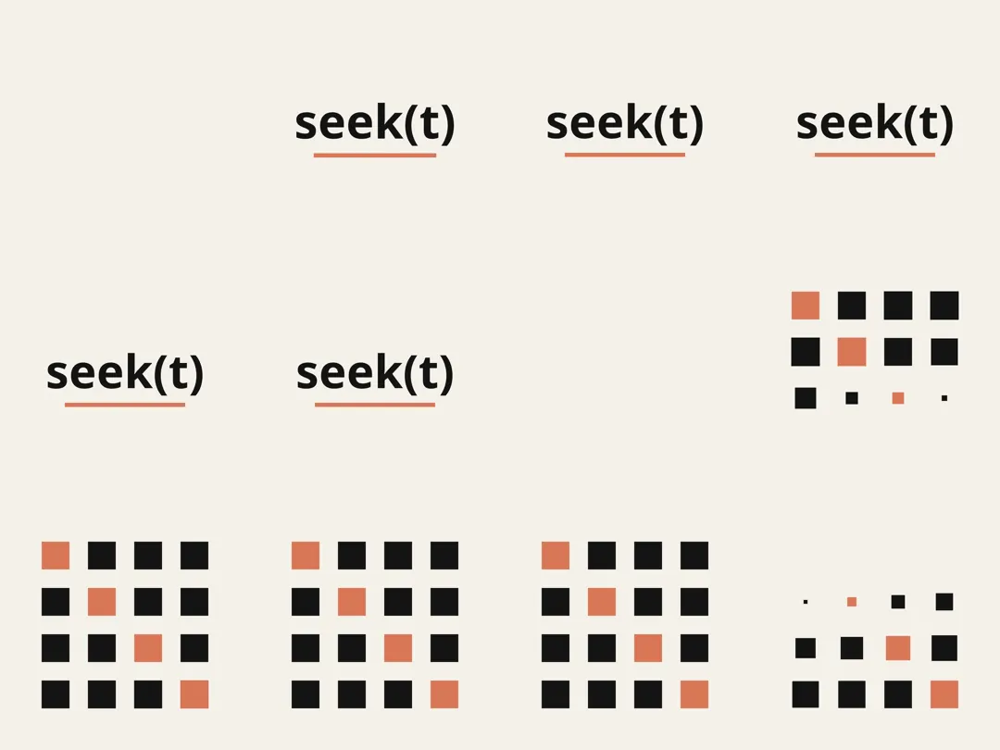
有三点值得注意。弹簧不需要模拟：spring(t) 直接返回任意 t 时刻的值，所以渲染第 300 帧不需要先算 0 到 299 帧。随机数生成器在每一帧内部重新设种，所以错落效果每次渲染都一样。两个场景都从空画布开始、以空画布结束，所以第 359 帧直接接回第 0 帧。
渲染器：render.mjs
它在无头 Chrome 里打开页面，把页面冻结在每一帧上，存一张 PNG。加 --sub 4 时，它还会为每帧存 4 张子帧，分布在半帧时间内，用来做真实的运动模糊。
// render.mjs
// usage: node render.mjs index.html --secs 6 --fps 60 --w 1080 --h 1080 [--sub 4]
import { chromium } from 'playwright';
import { pathToFileURL } from 'node:url';
import { mkdirSync, rmSync } from 'node:fs';
const args = process.argv.slice(2);
const file = args.find((a, i) => !a.startsWith('--') && !(args[i - 1] || '').startsWith('--')) ?? 'index.html';
const opt = (k, d) => { const i = args.indexOf('--' + k); return i >= 0 ? Number(args[i + 1]) : d; };
const SECS = opt('secs', 6), FPS = opt('fps', 60), W = opt('w', 1080), H = opt('h', 1080), SUB = opt('sub', 1);
const N = Math.round(SECS * FPS); // frames 0..N-1, never N
rmSync('out/frames', { recursive: true, force: true });
mkdirSync('out/frames', { recursive: true });
const browser = await chromium.launch();
const page = await browser.newPage({ viewport: { width: W, height: H } });
await page.goto(pathToFileURL(file).href + '?render=1', { waitUntil: 'networkidle' });
await page.evaluate(async () => { await document.fonts.ready; });
let n = 0;
for (let i = 0; i < N; i++) {
for (let j = 0; j < SUB; j++) {
const t = (i + (j / SUB) * 0.5) / FPS; // subframes over half a frame = 180° shutter
await page.evaluate(async (t) => {
if (window.seek) await window.seek(t);
for (const a of document.getAnimations()) { a.pause(); a.currentTime = t * 1000; }
await new Promise((r) => requestAnimationFrame(r));
}, t);
await page.screenshot({ path: `out/frames/${String(n++).padStart(5, '0')}.png` });
}
if (i % FPS === 0) console.log(`rendered ${i / FPS}s of ${SECS}s`);
}
await browser.close();
console.log(`done: ${n} images in out/frames`);然后把帧变成视频：
# Plain render (no --sub)
ffmpeg -y -framerate 60 -i out/frames/%05d.png -c:v libx264 -preset slow -crf 16 -pix_fmt yuv420p -movflags +faststart out/silent.mp4
# With --sub 4: average each group of 4 subframes into one motion-blurred frame
ffmpeg -y -framerate 240 -i out/frames/%05d.png -vf "tmix=frames=4,select='eq(mod(n\,4)\,3)',setpts=N/(60*TB)" -r 60 -c:v libx264 -preset slow -crf 16 -pix_fmt yuv420p -movflags +faststart out/silent.mp4整个循环：node render.mjs index.html --secs 6 --fps 60 写出 360 张 PNG，ffmpeg 把它们变成 MP4。不管你的机器多慢，每一帧都是精确的，因为每张 PNG 都是页面冻结在某个精确 t 时的样子。
从这以后，你很少需要自己敲命令。只要告诉 Claude Code：“用 render.mjs 以 60 fps 渲染 index.html，打开第 0、90、180 和 270 帧，先告诉我你看到了什么，再动任何东西。”第 84 帧就是 out/frames/00084.png，所以“看第 84 帧”是一条 Opus 可以字面执行的指令。
第 6 部分：数字——缓动、弹簧、时长、节拍网格
动效设计师用曲线和帧思考，那就给 Opus 曲线和帧。下面是速查表。
缓动
| 名称 | cubic-bezier | 用于 |
|---|---|---|
| ease-out-expo | 0.16, 1, 0.3, 1 | 文字和 logo 揭示 |
| ease-out-quint | 0.22, 1, 0.36, 1 | 高级感入场 |
| ease-out-cubic | 0.33, 1, 0.68, 1 | UI 元素入场 |
| ease-in-out-quart | 0.76, 0, 0.24, 1 | 横穿屏幕的移动、镜头推进 |
| ease-in-out-sine | 0.37, 0, 0.63, 1 | 环境漂移、平静的移动 |
| ease-in-expo | 0.7, 0, 0.84, 0 | 快速退场 |
| ease-out-back | 0.34, 1.56, 0.64, 1 | 带明显过冲的弹出 |
四条规则覆盖 90% 的情况。入场用 ease-out。退场用 ease-in，时长约为入场的一半。横穿屏幕用 ease-in-out。线性只用于旋转、进度条和循环相位：在位移上用线性，是让渲染看起来像渲染的最快方法。
弹簧
缓动曲线沿固定路径从 A 走到 B。弹簧有质量：它会加速、轻微过冲、然后落定。这就是弹簧显得“贵”的原因。
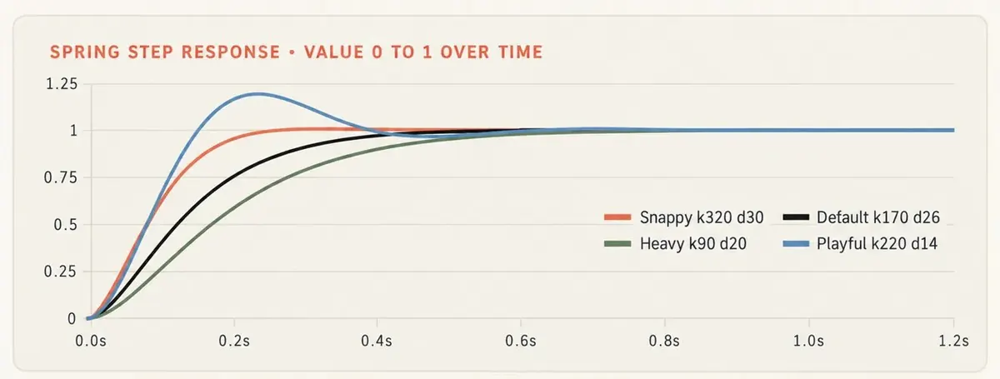
图中四条曲线，以及关键数字：
| 预设 | 刚度 / 阻尼 | 阻尼比 | 过冲 | 进入 2% 误差带 | 用于 |
|---|---|---|---|---|---|
| Snappy 利落 | 320 / 30 | 0.84 | 低于 1% | 约 0.23 s | 按钮、开关、UI |
| Default 默认 | 170 / 26 | 约 1.0 | 无 | 约 0.45 s | 卡片、容器、镜头 |
| Heavy 厚重 | 90 / 20 | 1.05 | 无 | 约 0.68 s | 大号文字、3D 物体、logo 定版 |
| Playful 俏皮 | 220 / 14 | 0.47 | 约 19% | 约 0.56 s | 吉祥物、贴纸、角色 |
每个库给弹簧旋钮起的名字都不一样。有一个数字能在它们之间互相换算，那就是阻尼比：
damping ratio = damping / (2 × √(stiffness × mass))这样读：1.0 从不回弹。0.7–0.85 显得高级。0.4–0.6 俏皮。低于 0.3 就是卡通了。作为参考，Remotion 的默认弹簧（mass 1、damping 10、stiffness 100）算出来是 0.5，react-spring 的默认（tension 170、friction 26）约为 1.0。
一条值得偷师的规则：让位置和缩放回弹，但绝不让不透明度或颜色回弹。过冲的淡入看起来像闪烁。
当一个值要多次改变目标时，比如光标或容器宽度，不要重启弹簧。每次变化加一个弹簧。运动保持连续，而且任何一帧仍然可以独立渲染：
// keys = [[time, value], ...] sorted by time. Returns the value at time t.
function track(t, keys, k = 170, d = 26) {
let v = keys[0][1];
for (let i = 1; i < keys.length; i++)
v += (keys[i][1] - keys[i - 1][1]) * spring(t - keys[i][0], k, d);
return v;
}
// A cursor that moves to x = 620 at 1.0 s, then back to 340 at 2.5 s:
const cursorX = track(t, [[0, 100], [1.0, 620], [2.5, 340]], 320, 30);时长，以帧计
用帧说时长，而不是感觉。24 fps 时一帧约 42 ms，60 fps 时约 17 ms。
| 动作 | 时长 | @24 fps | @30 fps | @60 fps |
|---|---|---|---|---|
| UI 反馈（按下、悬停） | 100–150 ms | 2–4 | 3–5 | 6–9 |
| UI 移动、开关 | 200–300 ms | 5–7 | 6–9 | 12–18 |
| 卡片或面板入场 | 400–500 ms | 10–12 | 12–15 | 24–30 |
| 主角揭示 | 600–900 ms | 14–22 | 18–27 | 36–54 |
| 退场（约为入场的一半） | 200–400 ms | 5–10 | 6–12 | 12–24 |
| 镜头运动 | 1–2 s | 24–48 | 30–60 | 60–120 |
错开（stagger）：字母间隔 1–2 帧，单词 60–120 ms，列表项 40–80 ms。上一个元素完成 30–50% 时开始下一个。完全依次显得机械，全部同时显得廉价。
文字停留：屏幕上的文字每个词至少 0.3 秒，再加 0.5 秒让人找到它。两个词的标题需要 1.1 秒。停留期间，缓慢推进 2% 能让画面保持生气，同时文字依然可读。
节拍网格
每拍帧数 = fps × 60 / BPM。
| BPM | @24 fps | @30 fps | @60 fps |
|---|---|---|---|
| 90 | 16 | 20 | 40 |
| 100 | 14.4 | 18 | 36 |
| 120 | 12 | 15 | 30 |
| 128 | 11.25 | 14.06 | 28.13 |
| 140 | 10.29 | 12.86 | 25.71 |
120 BPM 是对视频最友好的速度：在所有常见帧率下都是整数帧。其他速度下，要按索引计算每一拍，frame = round(i × 60 / BPM × fps)，绝不要一遍遍累加一个取整后的帧数。在 128 BPM、30 fps 下，每拍累加 14 帧会把第 32 拍放在第 448 帧而不是第 450 帧。你和音乐差了 2 帧，观众是能感觉到的。
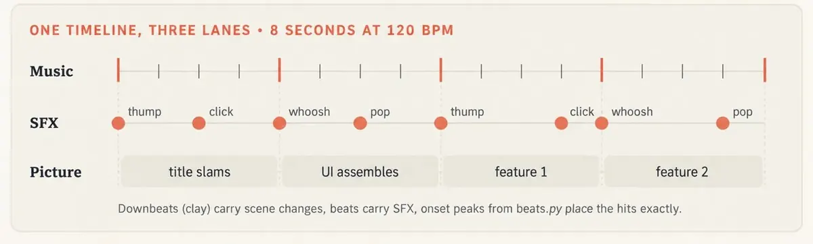
三条轨道是这样分工的：强拍（每第 4 拍）承载换场，拍点承载音效，从音轨测出的起音（onset）峰值精确放置打点（第 8 部分）。踩着拍点剪，按小节换版式。每一拍都改变一切会让观众疲惫。
动画原则，写成数字
迪士尼的动画师几十年前写下了十二条动画原则。每一条都可以写成帧数和尺寸，而这是模型唯一能精确遵循的形式。
| 原则 | 作用 | 在提示词里写成 |
|---|---|---|
| 预备动作（Anticipation） | 主动作之前朝反方向的一个小动作 | 6–12 帧，主动作行程的 10–25%，反方向 |
| 挤压与拉伸 | 表现速度和重量 | 保持体积：scaleX × scaleY ≈ 1。起跳拉伸 0.85 × 1.18，落地挤压 1.25 × 0.8 |
| 跟随动作（Follow-through） | 身体停下后松散部件继续运动 | 在这些部件上加第二个更松的弹簧，阻尼比 0.3–0.5 |
| 重叠动作 | 各部分在不同时间开始 | 四肢、标签和阴影比身体滞后 2–6 帧 |
| 弧线 | 自然路径是弯的 | 跳跃走抛物线，移动沿曲线，绝不走直线斜角 |
| 慢入慢出 | 加速，然后柔和落定 | 入场用 ease-out 和弹簧，位移绝不用线性 |
| 时间节奏（Timing） | 帧数决定重量 | 轻物体每个动作 6–10 帧，重物体 18–30 帧 |
| 夸张 | 在手机尺寸下也能看出来 | 关键姿势比“感觉合适”再多推 10–30% |
| 布局（Staging） | 眼睛知道该看哪 | 每个镜头一个主角。其余一切行程为 60%，晚 100–200 ms 开始 |
| 次要动作 | 停留时的生气 | 环境运动小于主角行程的 5%，走缓慢的正弦 |
实际效果是这样的：一个 3D 吉祥物沿着时间线蹦跳，每条原则的标签恰好在它发生的那一帧亮起。
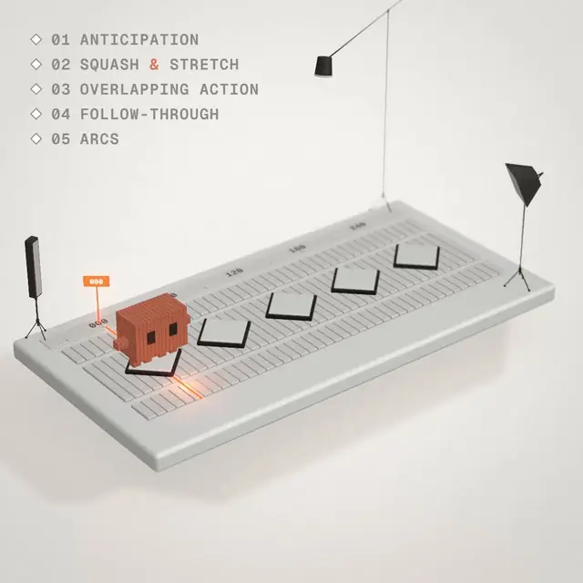
把标签钉在某一帧上，同时也是一种测试：如果某个动作晚了，标签会在动作发生之前亮起，你一眼就能看出来。
第 7 部分：评审循环——让 Opus 看自己的帧
Opus 能读图，但不能看视频。所以诀窍是把你的视频变成它能读的图。正是这一个习惯，把爆款和配文“有点一般”的作品区分开。
循环很简单：渲染、查看、写带帧号的意见、修改、重渲。两到四轮是正常的。第一次渲染是草稿，不是结果。
给它看什么
| 视图 | 揭示什么 | 怎么做 |
|---|---|---|
| 联系表 | 把整件作品当分镜看：节奏、多样性、死区 | ffmpeg，见下 |
| 条带（Strip） | 一个快速动作前后的 12 个连续帧：跳帧、重叠、峰值滞后 | ffmpeg，见下 |
| 手机测试 | 在 360 px 宽时的观感，也就是大多数人看到的尺寸 | ffmpeg，见下 |
| 单帧 | 一个精确的细节 | out/frames/00084.png |
| 运动轨迹 | 一个动作的间距。等间距显得机械，在关键帧附近收紧的间距说明缓动起作用了 | 让它加一个 ?debug=1 模式 |
| 速度曲线 | 每帧位置画成图表。直线是线性运动，尖角是生硬起步 | 让它记录并绘图 |
# Contact sheet: 2 frames per second, 6 across (15 s = 30 frames = 6x5; for a 6 s loop use tile=4x3)
ffmpeg -y -i out/silent.mp4 -vf "fps=2,scale=320:-1,tile=6x5" -frames:v 1 out/contact.png
# Strip: 12 consecutive frames starting at 2.9 s
ffmpeg -y -ss 2.9 -i out/silent.mp4 -vf "scale=240:-1,tile=12x1" -frames:v 1 out/strip.png
# Phone test: one frame per second at 360 px wide
ffmpeg -y -i out/silent.mp4 -vf "fps=1,scale=360:-1,tile=6x1" -frames:v 1 out/phone.png评审提示词
这条提示词让 Opus 给自己的作品打分，而不是为它辩护：
Open out/contact.png, out/strip.png and out/phone.png.
Look at them as a harsh motion director, not as the author.
Score 1-10: hook (first 2 s) · readability at 360 px · motion quality · variety ·
composition · brand accuracy · sound sync.
List the 3 biggest problems with frame numbers. Check specifically for:
- text overlapping during a swap
- anything moving linearly
- two hero moves at the same time
- a beat where nothing happens
- text that's unreadable at phone size
- anything from the BANNED list
- a jump at the loop seam (compare frame N-1 with frame 0)
Fix those 3, re-render, and show me the new contact sheet and scores.
Repeat until every score is 8+.中文对照（译文，仅供理解；复制使用请用上面的英文原文）
打开 out/contact.png、out/strip.png 和 out/phone.png。
以一个严厉的动效导演而不是作者的身份去看它们。
1–10 打分：钩子（前 2 秒）· 360 px 下的可读性 · 运动质量 · 多样性 · 构图 · 品牌准确度 · 声音同步。
列出最大的 3 个问题并附帧号。特别检查：
- 切换时文字重叠
- 任何线性移动的东西
- 两个主动作同时发生
- 某一拍什么都没发生
- 手机尺寸下看不清的文字
- BANNED 清单里的任何东西
- 循环接缝处的跳变（对比第 N-1 帧和第 0 帧）
修掉这 3 个，重渲，给我看新的联系表和分数。
重复直到每项都 8 分以上。8 分长什么样，让你们按同一个标准打分：
| 维度 | 8/10 意味着 |
|---|---|
| 钩子 | 前 10 帧内有东西在动，而且第 0 帧本身就是完整的构图 |
| 可读性 | 每个字在手机联系表上都清晰，并停留足够读两遍的时间 |
| 运动 | 位置上没有线性运动，每个弹簧都落定，条带里没有跳帧 |
| 多样性 | 每 2–4 秒有新东西，没有任何技法连续重复 |
| 构图 | 每帧一个清晰的主角，没有东西意外贴边 |
| 品牌 | 真实 UI、真实 logo、精确 hex 颜色 |
| 声音同步 | 每个打点都落在它的帧上或晚一帧，绝不提前 |
有效的追加指令
每一条都指向帧，而不是感觉。每轮用一两条。一次全贴上去，修改就变成了重写。
Render stills at frames 0, 30, 60, 90 and 120. Describe each in one sentence as a first-time
viewer would. Does the story read without sound?
Make a strip of frames 80-91. Does anything pop, jump or overlap? Fix it at the frame where it starts.
Add a ?debug=1 mode that draws the hero's last 10 positions as fading dots. Render frames 40-70
with it. The spacing should tighten near the keys.
Log the hero's x, y and scale per frame to motion.csv and plot it as a PNG.
Mark every linear segment and every sharp corner.
Review this like a senior motion designer: 10 notes ordered by impact,
each with a frame number and the fix.
It's too busy. Remove 30% of the motion and keep only the moves that guide the eye.
The ending is abrupt. Add a one-beat hold with a 2% push, then settle on a spring at damping ratio 0.8.中文对照（译文，仅供理解；复制使用请用上面的英文原文）
渲染第 0、30、60、90 和 120 帧的静帧。以第一次看的观众身份，每张用一句话描述。没有声音时故事能看懂吗？
做一条第 80–91 帧的条带。有没有东西跳帧、跳变或重叠？在它开始的那一帧修。
加一个 ?debug=1 模式，把主角最近 10 个位置画成渐隐的点。用它渲染第 40–70 帧。间距应该在关键帧附近收紧。
把主角每帧的 x、y 和缩放记录到 motion.csv 并画成 PNG。标出每一段线性和每一个尖角。
像资深动效设计师一样评审：按影响排序的 10 条意见，每条带帧号和修法。
太忙了。去掉 30% 的运动，只保留引导视线的动作。
结尾太突然。加一拍的停留并推进 2%，然后以阻尼比 0.8 的弹簧落定。账单
当创作者如实说出来时，数字是这样的：
| 作品 | 实际花了什么 |
|---|---|
| Miles 的发布视频 | 3 条提示词 |
| Vox 的黑洞实验室 | 1 条提示词 + 3 轮通宵打磨，5 小时 28 分，按 API 价格约 90 美元 |
| @mablesjoseph 的水彩短片 | 163 次模型调用，近 7 小时 |
| Donald 的音乐 MV | 5 分钟口述简报 + 12 小时自主工作 |
迭代不是方法的失败。迭代就是方法本身。
第 8 部分：声音——Opus 听不见，所以它去测量
Opus 不能听音频。它对声音做的一切都是数字：时间戳、频率、响度。这反而是个优势。它从不“感觉”同步，它测量同步。
写任何代码之前有两条规则：
- 画面必须在静音时成立。X 自动播放视频时是静音的，所以大多数人在听到之前先看到你的作品。
- 声音落在它的画面帧上或晚一帧，绝不提前。现实中光比声音先到，所以声音稍晚感觉自然，提前则立刻感觉不对。
路径 A · 你自带音轨：先测量
把这个存为 beats.py。它把你的歌变成一份动画可以踩着剪的时间列表：
# beats.py usage: python beats.py audio/track.wav > beats.json
import sys, json
import numpy as np, librosa
y, sr = librosa.load(sys.argv[1], sr=None, mono=True)
tempo, beat_frames = librosa.beat.beat_track(y=y, sr=sr)
beats = librosa.frames_to_time(beat_frames, sr=sr)
onsets = librosa.onset.onset_detect(y=y, sr=sr, units="time")
json.dump({
"bpm": round(float(np.atleast_1d(tempo)[0]), 2),
"beats": [round(float(b), 3) for b in beats], # cuts and state changes
"downbeats": [round(float(b), 3) for b in beats[::4]], # big moments (assumes beat 0 is a downbeat)
"onsets": [round(float(o), 3) for o in onsets], # exact hits for sound effects
}, sys.stdout, indent=1)然后告诉 Opus：“读 beats.json。换场放在强拍上，状态变化放在拍点上，每个视觉打点放在最近的起音上。”检查第一个强拍是否真的是小节开头。如果不是，告诉它哪一拍才是，它会平移网格。
路径 B · 没有音轨：用代码合成
不用采样、不用下载、不用授权。每个音效都是几行数学，同一份提示音列表每次都生成同一个文件：
# sfx.py usage: python sfx.py cues.json out/sfx.wav
# cues.json: [{"t": 0.5, "type": "click"}, {"t": 1.0, "type": "thump"}, ...]
import sys, json
import numpy as np, soundfile as sf
SR = 48000
cues = json.load(open(sys.argv[1]))
out = np.zeros(int((max(c["t"] for c in cues) + 1.5) * SR))
rng = np.random.default_rng(42) # seeded: same file every run
def tone(dur, f0, f1, decay, amp): # a pitch sweep with an exponential decay
t = np.arange(int(dur * SR)) / SR
phase = 2 * np.pi * np.cumsum(np.linspace(f0, f1, t.size)) / SR
return amp * np.sin(phase) * np.exp(-t * decay)
def noise(dur, amp): # white noise that swells in and out
t = np.arange(int(dur * SR)) / SR
return amp * rng.uniform(-1, 1, t.size) * np.sin(np.pi * t / dur)
VOICES = {
"click": lambda: tone(0.04, 2200, 1800, 120, 0.35),
"pop": lambda: tone(0.12, 500, 1400, 35, 0.40),
"thump": lambda: tone(0.45, 110, 45, 9, 0.90),
"whoosh": lambda: noise(0.35, 0.18),
}
for c in cues:
s = VOICES[c["type"]]()
i = int(round(c["t"] * SR))
out[i:i + s.size] += s[: max(0, out.size - i)]
out /= max(1.0, np.abs(out).max() / 0.89) # keep peaks under about -1 dBFS
sf.write(sys.argv[2], np.stack([out, out], axis=1), SR)让 Opus 从与画面相同的时间线写出 cues.json，这样每个声音已经知道自己在哪一帧。还想要配乐？就要“一首用代码合成的原创 120 BPM 曲子：每拍一个底鼓、一条贝斯线、一层铺底，不用采样”。同样的思路，只是音符更长。
混音、电平、合流
# Music + effects -> one mix at -14 LUFS -> under the picture (Windows: put it on one line)
ffmpeg -y -i out/silent.mp4 -i audio/track.wav -i out/sfx.wav \
-filter_complex "[1:a][2:a]amix=inputs=2:duration=first:normalize=0,loudnorm=I=-14:TP=-1.5:LRA=11[a]" \
-map 0:v -map "[a]" -c:v copy -c:a aac -b:a 192k -shortest out/final.mp4| 目标 | 数值 | 为什么 |
|---|---|---|
| 响度 | 综合 -14 LUFS | 网页和社交视频的常见目标 |
| 真峰值 | -1 dBTP 或更低 | 余量：AAC 编码会把峰值推高 |
| 打点高出音乐垫底 | 3–6 dB | 手机上听得见又不刺耳 |
| 低频 | 重要的音保持在约 150 Hz 以上，或给它们加泛音 | 手机扬声器在那以下几乎不出声 |
| 采样率 | 48 kHz | 视频标准 |
低频这一行是大家最常忽略的。合成的混音可能把大部分能量放在 60 Hz 以下，那里手机扬声器什么都放不出来。在笔记本上听起来饱满，在手机上几乎无声。发布前让 Opus 测一下 150 Hz–6 kHz 频段的能量。
然后让它用它唯一能用的方式检查同步——测量：“解码 out/final.mp4，找到每个打点的峰值，报告它与对应帧的偏差，以毫秒计。”
第 9 部分：无缝循环与导出到 X
最后一公里是教程跳过、观众却最先注意到的部分。
看不出接缝的循环
当第 N-1 帧接到第 0 帧和任意两帧之间一样顺滑时，循环就是无缝的。五条规则帮你做到：
- 渲染第 0 到 N-1 帧，绝不渲染第 N 帧。第 N 帧就是第 0 帧，播两次就是卡顿。
- 所有周期运动都由一个相位驱动，
phase = t / DUR，在一个循环内从 0 走到 1。 - 使用整数周期。每个循环恰好转 90° 的正方形会落回自身。恰好完成 3 个周期的波会在起点结束。
- 让有机噪声循环：在 2D 噪声里沿着一个圆走，结束时就回到起点。
- 让第 0 帧是一个完整的构图。视频加载时人们看到的就是它。
const phase = (t % DUR) / DUR; // 0 -> 1 over the loop
const angle = phase * Math.PI / 2; // exactly 90° per loop
const bob = Math.sin(phase * 2 * Math.PI * 3); // exactly 3 cycles per loop
// Looping noise: walk a circle through any seeded 2D noise function
const a = phase * 2 * Math.PI;
const wobble = noise2D(Math.cos(a) * 0.8, Math.sin(a) * 0.8);无限楼梯这样的循环，就像我做的这个，是同一思路的 3D 版。每个循环让镜头恰好移动一级台阶，最后一帧就变成平移了一级的第一帧：
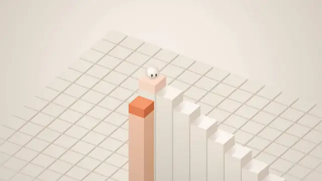
每条接缝都用同样的方法检查。把循环背靠背播三遍，盯住接缝：
ffmpeg -y -stream_loop 2 -i out/final.mp4 -c copy out/loop_check.mp4再检查渲染是否确定（deterministic）。渲染两次并比较帧。如果有任何差异，说明代码里有东西读了时钟或用了未设种子的随机数：
node render.mjs index.html --secs 6 --fps 60 && rm -rf out/frames_a && cp -r out/frames out/frames_a
node render.mjs index.html --secs 6 --fps 60 && diff -r out/frames out/frames_a && echo "deterministic"先选画布
后改画布意味着重新调度每个镜头，所以把它写在提示词第一行。
| 比例 | 尺寸 | 最适合 |
|---|---|---|
| 1:1 | 1080 × 1080 | 信息流里的循环。各处裁切最安全 |
| 4:5 | 1080 × 1350 | 在移动端信息流里占最多竖向空间 |
| 16:9 | 1920 × 1080 | 桌面、文章、YouTube |
| 9:16 | 1080 × 1920 | 移动端全屏，Reels 和 TikTok 交叉发布 |
导出命令
# MP4 for an X post: H.264 High, yuv420p, starts playing immediately
ffmpeg -y -i out/final.mp4 -c:v libx264 -profile:v high -pix_fmt yuv420p -crf 18 -c:a aac -b:a 192k -movflags +faststart out/x.mp4
# GIF for an X Article: one palette for the whole clip, loops forever
ffmpeg -y -i out/silent.mp4 -vf "fps=25,scale=1080:-1:flags=lanczos,split[a][b];[a]palettegen=stats_mode=diff[p];[b][p]paletteuse=dither=bayer:bayer_scale=4" -loop 0 out/x.gifGIF 的计时陷阱：GIF 以百分之一秒为单位存储每帧的延迟。25 fps（4/100 秒）和 50 fps（2/100 秒）能整除。24、30 和 60 fps 不能，于是延迟被取整，循环会漂离你的节拍网格。做 GIF 时，用 25 或 50 fps 渲染。
X 的限制，以撰文时它的媒体文档为准（会变，边缘情况请再核对）：
| 规格 | 视频 | GIF |
|---|---|---|
| 时长或大小 | 非 Premium 最长 140 秒 | 最大 15 MB |
| 画面尺寸 | 最大 1920 × 1080（或 1080 × 1920） | 最大 1280 × 1080 |
| 帧率 | 最高 60 fps | 用 25 或 50 fps |
| 格式 | H.264 High、yuv420p、AAC 音频 | 一个调色板，无限循环 |
如果 GIF 超过 15 MB，把帧率降到 25、缩小尺寸，或在 palettegen 里加 max_colors=128。
第 10 部分：选择你的引擎
下面每种引擎 Opus 都能写。在提示词第一行点名你要的那个，否则它会替你选，而它通常选纯 HTML。
| 引擎 | 是什么 | 何时选它 | 许可证（简） |
|---|---|---|---|
| 纯 HTML + Canvas / SVG | 无需安装。Opus 的默认，路线 A | 15 秒左右以内的一个想法：文字、形状、UI | 免费 |
| Three.js | 基于 WebGL 的 3D 场景、灯光、材质和着色器 | 任何 3D：产品、吉祥物、世界 | MIT |
| p5.js | 一本创意编程速写本 | 生成艺术、手绘和纸张质感 | LGPL |
| GSAP | Web 的时间线库 | 网页内的精确编排、文字拆分、SVG 形变 | 免费使用；请阅读其许可条款 |
| Remotion | 以 React 组件写视频，自带渲染器 | 系列、模板、数据驱动视频、长片 | 个人和小公司免费；较大的公司需要公司许可 |
| HyperFrames | 输入 HTML + GSAP 时间线，输出 MP4（开源，来自 HeyGen） | 你用网页思维、想要一个能渲染的 CLI | 开源 |
| Motion（原 Framer Motion） | React 应用的动画库 | 活的产品里的动效，而不是视频 | MIT，无视频渲染器 |
我的经验法则：15 秒以内的一个想法 → 纯 HTML。任何 3D → Three.js。系列、模板或数据驱动视频 → Remotion。你用网页和 GSAP 思考 → HyperFrames。活在你应用里的动效 → Motion 或 GSAP。
然后把引擎连同数字写进 OUTPUT 那一行。“A Remotion composition, 1920 × 1080, 30 fps, 450 frames”让 Opus 没有任何可猜的。
启动一个框架项目
# Remotion: video as React components
npx create-video@latest my-video # pick a template
cd my-video && npm i
npm run dev # Remotion Studio in your browser
npx remotion render <CompositionId> out/video.mp4
# HyperFrames: HTML + GSAP in, MP4 out (needs Node 22+ and ffmpeg)
npx hyperframes init my-video
cd my-video
npx hyperframes preview
npx hyperframes render两个项目都为 Claude Code 发布了 agent skills。按它们的文档安装，Opus 就会遵循各框架自己的约定，而不是即兴发挥。
Three.js，渲染安全的写法
用 import map 锁定版本，并用 t 驱动场景，绝不用时钟：
<script type="importmap">
{ "imports": { "three": "https://cdn.jsdelivr.net/npm/three@0.160.0/build/three.module.js" } }
</script>
<script type="module">
import * as THREE from 'three';
const renderer = new THREE.WebGLRenderer({ antialias: true });
renderer.setSize(1080, 1080);
document.body.appendChild(renderer.domElement);
const scene = new THREE.Scene();
const camera = new THREE.PerspectiveCamera(30, 1, 0.1, 100);
// ... build the scene once here ...
window.seek = (t) => {
// set every position, rotation and light from t, then draw
camera.position.set(Math.sin(t * 0.5) * 6, 2, Math.cos(t * 0.5) * 6);
camera.lookAt(0, 0, 0);
renderer.render(scene, camera);
};
</script>关于 3D 的两点说明。Three.js 的参数名在不同版本之间会变，这正是要锁定版本并在提示词里写明的原因。另外，无头 Chrome 默认用软件渲染 WebGL：慢但精确。对较长的 3D 作品，让 Opus 为你的机器配置 GPU 渲染。
第 11 部分：坏了怎么办——症状 → 原因 → 修法
同样的故障会在每个项目里反复出现。每一行都附有修复它的提示词。
| 症状 | 为什么会这样 | 贴这句 |
|---|---|---|
| 渐变背景上的居中标题，所有东西一起淡入 | 没有指定视觉或版式，于是 Opus 用了默认值 | “禁止：渐变背景上的居中标题、所有东西一起淡入。用 12 栏网格、左对齐文字，每个入场错开 60 ms。” |
| 动作显得机械 | 位置上用了线性缓动 | “把每个线性移动换成弹簧：UI 阻尼比 0.8，文字 1.0。线性只用于旋转和循环相位。” |
| 所有东西同时发生 | 动作之间没有层级 | “每个镜头一个主动作。次要动作行程为 60%，晚 150 ms 开始。环境运动小于主角行程的 5%。” |
| 形状在帧之间闪烁或抖动 | 每帧调用未设种子的 Math.random | “用带种子的生成器，并在每帧内部重新设种。任何地方都不用 Math.random。” |
| 同一帧两次渲染结果不同 | 时钟、定时器或 CSS 过渡 | “执行渲染契约：t 的纯函数，渲染模式下不用 Date.now、定时器或 CSS 过渡。” |
| 循环接缝处卡顿 | 渲染了第 N 帧，或某个周期不是整数 | “只渲染第 0..N-1 帧。让每个周期运动完成整数个周期。对比第 N-1 帧和第 0 帧。” |
| 文字缩放时发糊 | 文字画得小再放大，或缩放图层上有 will-change | “按最大尺寸绘制文字再缩小，绝不放大。去掉镜头会缩放的任何元素上的 will-change。” |
| 前几帧字体不对 | 字体加载完成前就开始截取 | “第一帧前先等 document.fonts.ready。” |
| 切换时文字重叠 | 新旧内容和形变在同一帧切换 | “新内容在形变开始 4 帧后进入。旧内容在形变前 4 帧离开。” |
| 中段出现死区 | 2 秒以上没有新东西 | “每一拍都必须有新东西发生。给我看哪些拍什么都没变，把它们填上。” |
| 产品 UI 看起来是编的 | Opus 凭记忆重画了它 | “用 Playwright 截取真实 UI，存到 ./assets，对真实截图的裁切做动画。” |
| 3D 看起来像塑料或霓虹 | 默认的泛光和发光，材质没有命名 | “不要泛光，不要发光。材质：[名称] roughness [x]、clearcoat [y]。主光、补光和轮廓光，给出精确颜色和强度。” |
| 声音感觉提前或滞后 | 打点靠猜 | “跑 beats.py。把每个视觉打点放在它的起音上。每个声音的峰值落在它的帧上或晚 1 帧，绝不提前。” |
| 笔记本上很好，手机上无声 | 混音都在 60–150 Hz 以下 | “测量 150 Hz–6 kHz 频段的能量。把贝斯升一个八度或加泛音，直到手机频段撑得起混音。” |
| GIF 漂离节拍 | 24/30/60 fps 的延迟在 GIF 里被取整 | “以 25 fps 导出 GIF。” |
| 渲染非常慢 | 画布太大、3D 软件渲染、子帧太多 | “预览以 540p、--sub 1 渲染。只有最终渲染用全尺寸。” |
| 还是看着像 AI | 还有没被禁止的默认值 | “按名称列出这次渲染里你用过的每一个默认值。逐个禁止，再渲染一次。” |
第 12 部分：导演简报——12 小时长跑背后的模板
那些通宵作品不是靠运气更好。它们来自“雇一个剧组”而不是“描述一个视频”的简报。Donald 的约 9,500 字符。@pradeepXkapoor 的机器人短片用了约 19,000 字符。读任何一份，你都会发现同一副骨架。
这就是那副骨架做成的模板。填上方括号，删掉不需要的：
ROLE
You are the director, animator, sound designer and render engineer for a [DURATION] film
made entirely in code. Treat this as a multi-session production. Don't rush to a final render.
THE FILM IN ONE LINE
[Logline + what the viewer should feel at the end.]
REFERENCES
- ./refs/: [video / frames / image library]. Take the grammar (pacing, palette, type,
transitions), never the content, characters or logos.
- ./audio/track.wav: use it unchanged. Run beats.py first and cut on beats.json.
TOOLS AND BUDGET
- Engine: [plain HTML + Canvas | Three.js 0.160.0 | Remotion | HyperFrames].
- Skills to load: [list]. API keys are in .env: [ELEVENLABS_API_KEY, ...]. Never print them.
- Budget for paid APIs: [$X]. Spend it only where code can't do the job.
CHARACTER BIBLE (if there is a character)
- Proportions in units, palette in hex, 3-5 expressions, how it moves.
- Identity lock: what can never change, whatever the style of the shot.
LOOK
- Palette (hex), type (family, weight, tracking), texture, camera language.
- BANNED: [your list + the defaults from Part 3].
BEAT SHEET
0:00-0:02 Hook: [the single most striking image]
0:02-0:10 [Act 1]
... A new visual payoff every 3-5 seconds
[END] The last frame sets up the first (if it loops)
TEXT ON SCREEN
When captions or lyrics go huge, and when they sit small. Composition leaves room for them.
Every line is held at least 0.3 s per word + 0.5 s.
WORKFLOW GATES (never skip a gate)
1. Write docs/style_guide.md and docs/shotlist.md (every shot: frames, camera, text, sound).
Show me the shot list. If I don't answer within 10 minutes, continue.
2. Stills for every shot -> contact sheet -> critique.
3. Animatic at 960x540 with placeholder sound. Fix the pacing before any polish.
4. Full animation -> polish pass -> sound pass -> final render.
5. For long films, write docs/ANIMATION_GUIDE.md first, then split chapters across
subagents, so every chapter is coded in the same style.
CRITIQUE LOOP (every shot, at least 3 rounds)
Render 3-5 stills per shot. Score 1-10: hook, readability at 360 px, motion,
composition, depth, sound sync, polish. Log the scores and the 3 biggest problems
in docs/review_log.md. Fix, re-render, repeat until every score is 8+.
DELIVERABLES
out/final.mp4 · out/loop_check.mp4 · out/poster.png · out/contact.png ·
docs/review_log.md · README.md中文对照（译文，仅供理解；复制使用请用上面的英文原文）
角色
你是一部完全用代码制作的 [时长] 影片的导演、动画师、声音设计师和渲染工程师。把它当作一个多会话的制作。不要急着做最终渲染。
一句话影片
[故事梗概 + 观众在结尾应该感受到什么。]
参考
- ./refs/：[视频 / 帧 / 图库]。学语法（节奏、配色、字体、转场），绝不学内容、角色或 logo。
- ./audio/track.wav：原样使用。先跑 beats.py，按 beats.json 剪。
工具与预算
- 引擎：[纯 HTML + Canvas | Three.js 0.160.0 | Remotion | HyperFrames]。
- 要加载的 Skills：[列表]。API key 在 .env 里：[ELEVENLABS_API_KEY, ...]。绝不打印它们。
- 付费 API 预算：[$X]。只花在代码做不到的地方。
角色设定集（如果有角色）
- 以单位表示的比例、hex 配色、3–5 种表情、它如何运动。
- 身份锁定：无论镜头风格如何，什么永远不能变。
视觉
- 配色（hex）、字体（字族、字重、字距）、质感、镜头语言。
- 禁止：[你的清单 + 第 3 部分的默认值]。
节拍表
0:00-0:02 钩子：[最抓人的那一个画面]
0:02-0:10 [第一幕]
... 每 3–5 秒一个新的视觉回报
[结尾] 最后一帧为第一帧做铺垫（如果循环）
屏幕文字
字幕或歌词何时变得巨大、何时缩小。构图要为它们留出空间。
每行至少停留 每词 0.3 秒 + 0.5 秒。
流程关卡（绝不跳过任何关卡）
1. 写 docs/style_guide.md 和 docs/shotlist.md（每个镜头：帧、镜头、文字、声音）。
给我看镜头表。如果我 10 分钟内没回复，就继续。
2. 每个镜头的静帧 -> 联系表 -> 评审。
3. 960x540 带占位声音的动态分镜（animatic）。任何打磨之前先修好节奏。
4. 完整动画 -> 打磨轮 -> 声音轮 -> 最终渲染。
5. 长片先写 docs/ANIMATION_GUIDE.md，再把章节分给子 agent，让每一章都以同样风格编码。
评审循环（每个镜头，至少 3 轮）
每个镜头渲染 3–5 张静帧。1–10 打分：钩子、360 px 下的可读性、运动、构图、纵深、声音同步、打磨度。把分数和最大的 3 个问题记录在 docs/review_log.md。修改、重渲、重复，直到每项都 8 分以上。
交付物
out/final.mp4 · out/loop_check.mp4 · out/poster.png · out/contact.png · docs/review_log.md · README.mdDonald 的简报里有一招值得直接偷：先生成，再描摹。由视频模型渲染带角色和真实物理的底片，然后 Opus 在上面用代码把整个画面重画一遍。视频模型提供难以手写的运动，代码层提供一个归你所有的统一外观。这就是第 1 部分的路线 C。
你不必打 9,500 个字符。Donald 也没打。用语音转文字把这些标题挨个口述一遍，然后粘贴转写稿，Opus 会把它结构化。正是这些标题，把五分钟的漫谈变成十二小时的制作。
FAQ
Opus 5.5 能自己做出视频文件吗？不能。它写画帧的代码。浏览器渲染这些帧，ffmpeg 编码成 MP4。在 Claude Code 里，Opus 会自己跑完整条流水线。
我需要 After Effects 吗？不需要。一个浏览器加 Claude 应用就足以起步。Claude Code、ffmpeg 和 Playwright 让你得到逐帧精确的渲染。
“一句提示词”是真的吗？有时候是，在 L1 级别。大多数爆款是 L3 或 L4 简报，或者有追加指令。两到四轮评审是正常的。
为什么我的一句话视频看起来很一般？你漏掉的每一行，Opus 都用默认值补上。加上视觉、参考、禁止清单和质检行（第 3 部分）。
effort 该用哪档？修改用 medium，有导演指示的新作品用 high，含糊的提示词和旗舰发布用 xhigh 或 max（第 4 部分）。
要多久？从一句话的大约 15 分钟，到通宵导演简报的 12 小时（第 2 部分）。
能用我的品牌吗？能。给它网址，让它截取真实 UI。绝不让它凭记忆重画 UI。
能模仿我喜欢的某个视频的风格吗？它能学语法：节奏、配色、字体、转场。让它抽帧、写一份风格指南并等你确认。把内容、角色和 logo 留在原处。
能做声音吗？能。它要么用代码合成一切，要么测量你给的音轨。它听不见，所以它测量（第 8 部分）。
能做 3D 和角色吗？能。3D 用 Three.js，角色用角色设定集加上动画原则表，难以手写的物理用路线 C。
要花多少钱？在聊天应用里，走你的订阅额度。通过 API 则取决于长度和 effort。一个参考数据：Vox 报告一次 5.5 小时的通宵运行按 API 价格约 90 美元。
术语表
| 术语 | 含义 |
|---|---|
seek(t) | 精确绘制时间 t 那一帧的函数。每次渲染的核心 |
| 渲染契约 | 让每一帧可复现的规则（第 5 部分） |
| 第 N-1 帧 | 循环的最后一帧。必须顺接第 0 帧 |
| 联系表 | 把很多帧平铺在一张图上，像分镜一样读 |
| 条带 | 一排连续的帧，用来抓跳帧和重叠 |
| 阻尼比 | 描述弹簧回弹的一个数。1.0 = 不回弹，0.5 = 俏皮 |
| 错开（Stagger） | 依次运动的元素之间的延迟 |
| 节拍网格 | 每一拍的帧号：每拍 fps × 60 / BPM 帧 |
| 强拍（Downbeat） | 一个小节的第一拍，4/4 拍里每第 4 拍。大时刻放在这里 |
| 起音（Onset） | 音轨里测得的一个声音的开始。打点放在这里 |
| LUFS | 感知响度。-14 LUFS 是网页视频的常见目标 |
| dBTP | 真峰值电平。保持在 -1 或更低 |
| CRF | x264 质量参数。越低越好：16–18 在视觉上近乎无损 |
| yuv420p | 每部手机和每个浏览器都能播放的像素格式 |
| faststart | 把 MP4 索引放到文件开头，让播放立刻开始 |
| 子帧 | 一帧之内的多次渲染，混合成真实的运动模糊 |
| 路线 A–D | 代码绘制、框架、混合流水线、素材剪辑（第 1 部分） |
| L1–L4 | 一句话、品牌短片、状态规格、导演简报（第 2 部分） |
最后一件事
这篇文章的一切都归结为一个观点：你决定的，Opus 去做；你不决定的，Opus 替你决定。所以多做决定。写出数字，禁止默认值，让它看自己的帧。
收藏这篇。下次你开始一件作品时，在第一条提示词之前先把这篇文章作为上下文发给 Opus 5.5。然后去做一件它在默认状态下永远不会做出的东西。
@0xkerazcity <3